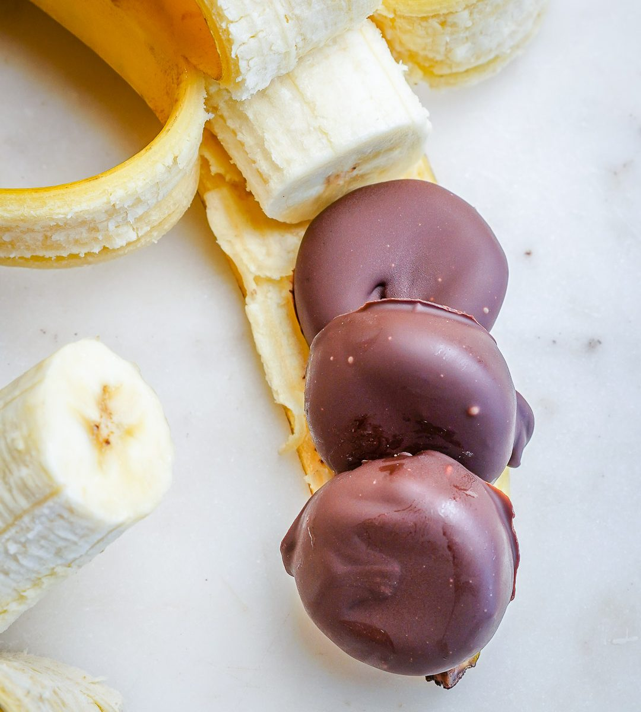

Go back
Copycat Trader Joe's Gone Bananas Recipe

Description
With these copycat Trader Joe’s Gone Bananas, the hardest part of making these delicious snacks is waiting for the bananas to freeze.
The number of servings will largely depend on the size of the banana you use.
Ingredients
- 1 large banana
- 1 1/2 cups dark chocolate chips (such as Ghirardelli® 60% Baking Chips)
- 3 tablespoons unsalted butter
- 1 tablespoon vegetable oil or as needed
Steps
- Line a baking sheet with parchment. Slice banana into 1/4-inch thick rounds. Place rounds onto the lined sheet, then place into the freezer. Freeze until solid, about 2 hours.
- Place chocolate chips, butter, and oil in a small microwave-safe bowl. Microwave on 50% power for 1 to 2 minutes, stopping to stir every 30 seconds, until chocolate is melted.
- Remove banana rounds from freezer. Place one round onto a fork and dip into the chocolate until fully coated. Shake to remove excess chocolate, then use another fork to help slide the chocolate covered banana round back onto the parchment lined baking sheet. Repeat process until all banana pieces are coated in chocolate.
- Place chocolate covered banana pieces back into the freezer until chocolate is set, about 30 minutes. Keep stored in the freezer.